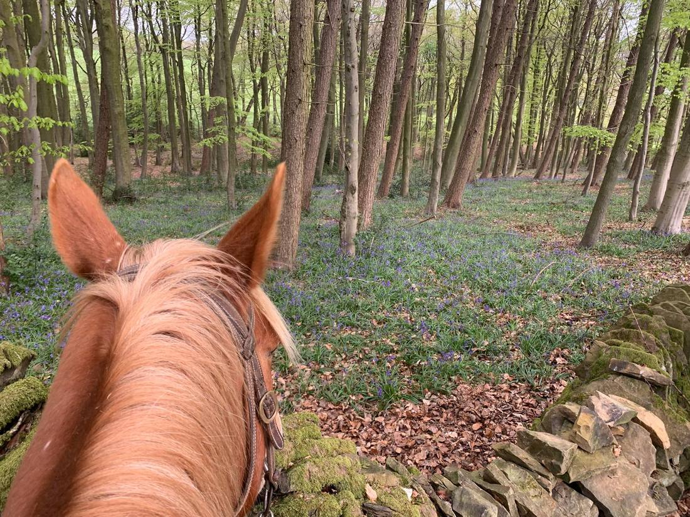
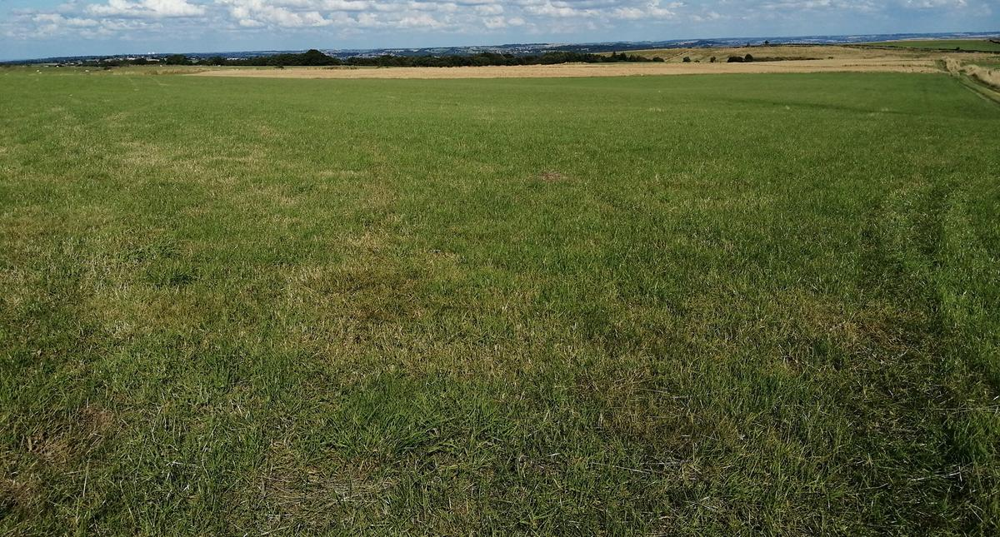
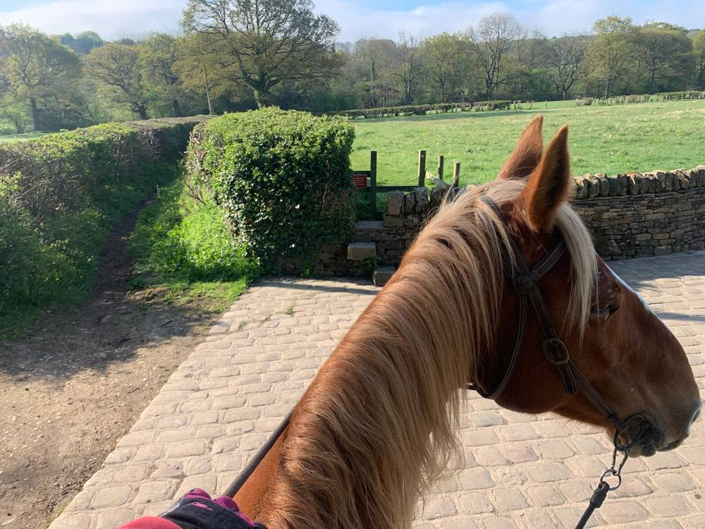
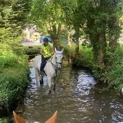
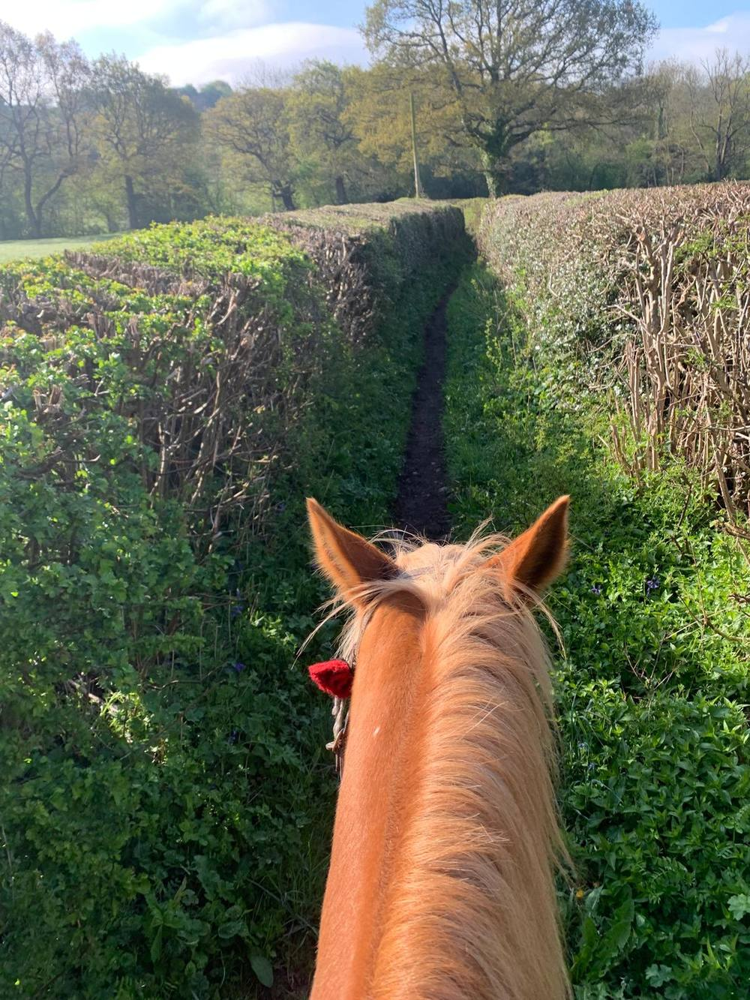
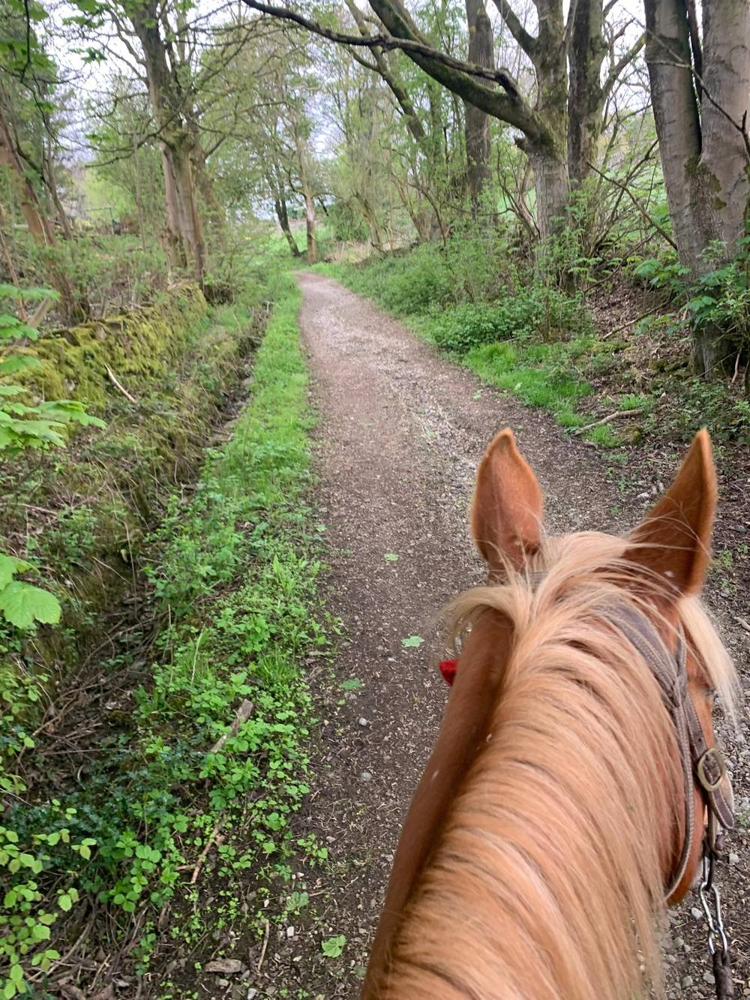

Peak District · Derbyshire
Four and a half miles of quiet lane and old bridleway on the edge of the Peak District, with a proper ford in the middle of it — the sort horses remember.

This is the ride I send people out on first. It starts from our own field on Fox Lane, just outside Holmesfield, and loops down through Barlow and back — about two hours at a walk and steady trot, with enough going on to keep a young horse interested and nothing on it that will frighten one.
The lanes are quiet, the bridleway is wide enough to ride beside someone, and you are never more than a mile or so from the start. It makes a good first ride away from home.
Before you set off
Starting and finishing at the Fox Lane field. Map © OpenStreetMap contributors.

The ride starts from our own field on Fox Lane. Flat, mown, and room to turn a lorry or a trailer without a three-point turn. £5 per vehicle, booked in advance through unthankequestrian.co.uk.
what3words: ///egging.escalates.upstarts — that points at the field gate, not the farmhouse.
The ride, in order

You come out of the field and turn right onto Fox Lane, which drops away downhill with the wood on one side. At the end of the lane you turn right, and a little further on right again onto Mill Lane, which takes you down to the crossing.

Shallow and firm underfoot in normal weather — knee-deep at most, and most horses walk straight through once one has led. It is the bit everybody remembers, and the bit worth taking your time over.
After heavy rain it runs a good deal faster and deeper, and there is no footbridge alongside to cross by instead. If it has been wet for days, leave it for another week.

Out of the water you turn right onto Johnnygate Lane, which runs past Barlow Woodseats Hall. There are peacocks in the grounds and they will sometimes call as you go by, so it is worth knowing before your horse hears one.
Then the long bridleway. Hedges both sides, bluebells through the wood in late April and May. It climbs gently and keeps going for the better part of a mile.

At the far end of the bridleway there are two houses on the left with dogs that often bark as riders pass. Nothing comes out at you, but gather your horse up in good time rather than meeting it by surprise.
The last stretch is Far Lane, a proper country lane, then back onto Fox Lane past Shillito Wood and the car park. The parking field comes into view across the open ground, which is a nice way to finish.
What you would hear
Riding this in BridleNav, you are not reading any of the above off a screen. It is spoken to you as you reach each point, in the words of the person who knows the ride — so your hands stay on the reins and your eyes stay up. Three of the real lines from this route:
“Turn right onto Mill Lane for the water crossing — take care.”
“Turn right onto Johnnygate Lane. Follow it along — you will pass Barlow Woodseats Hall on your left, where you might spot some beautiful peacocks — then continue onto the long bridleway.”
“As you come to the end of the bridleway there are two houses on your left with dogs that often bark — gather your horse up in good time.”
That is the difference between a line on a map and someone who has ridden it telling you what is coming. BridleNav is in build and comes out in spring 2027 — see what it will cost and get the email when it lands
Your turn
Anywhere in the country, two miles or twenty-two. If you have a ride you love and a GPX file of it, that is all it takes to start — and the next rider gets to hear it in your words.